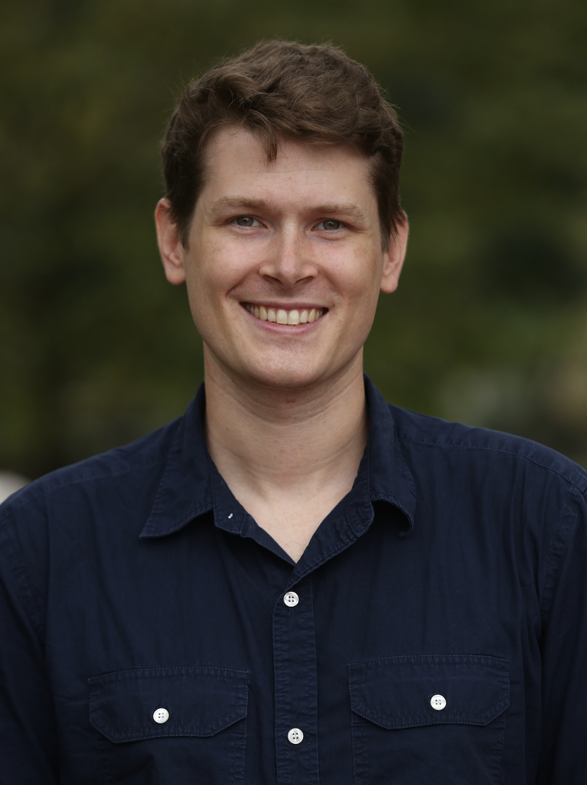

Patrick Farrell
pwf2108 at columbia dot edu
I am a fifth-year PhD candidate in economics at Columbia University.
I am interested in urban and spatial economics, international trade, and economic development.
You can find my CV here.
Papers
Working Papers
-
Populations in Spatial Equilibrium,
with Matthew Easton.
November 2025.
[PDF]
Received 2023/2024 Vickrey Fellowship for best third-year paper at Columbia.
-
Quality Upgrading in Global Supply Chains: Evidence from Colombian Coffee,
with Rocco Macchiavello (r), Josepa Miquel-Florensa (r), Nicolás de Roux (r), Eric Verhoogen (r), and Mario Bernasconi (r).
December 2025.
Revise and resubmit, Quarterly Journal of Economics. [PDF] NBER #34610, CEPR #20981
Work in Progress
-
Switching Costs in Production,
with Eric Verhoogen.
-
Quality Complementarities and Pass-Through,
with David Atkin, Azam Chaudhry, Shamyla Chaudry, Amit K. Khandelwal, Danial Lashkari, and Eric Verhoogen.
-
The Boroughs were Burning: Public Services and Change in Cities.
-
Export Restrictions as Industrial Policy.
Published Papers
-
Social Connectedness in Urban Areas,
with Michael Bailey, Theresa Kuchler, and Johannes Stroebel.
Journal of Urban Economics, volume 118, 2020.
[Link]
Teaching
As instructor
-
Princeton SPIA MPA/PhD Math Camp.
Summer 2022, 2023, 2024, 2025.
As teaching fellow
Received 2022/2023 Wueller Fellowship for best undergraduate elective teaching fellow at Columbia.
-
Economic Growth and Development.
Fall 2022, for Professor Xavier Sala-i-Martin.
-
International Trade.
Spring 2023, for Professor Waseem Noor
© 2024 Patrick Farrell -- template (essentially) stolen from Matthew Easton, who "(especially) shamelessly [stole it from] John Urschel."